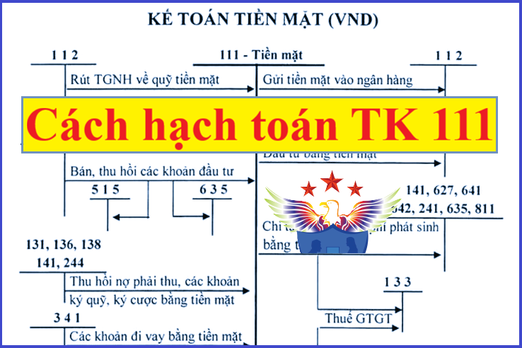

Hướng dẫn cách hạch toán tiền mặt - Tài khoản 111 áp dụng chế độ kế toán theo Thông tư 99/2025/TT-BTC mới nhất 2026, hạch toán tiền mặt, ngoại tệ nhập quỹ, hạch toán xuất quỹ tiền mặt, Rút tiền gửi Ngân hàng về nhập quỹ tiền mặt, doanh thu khi bán hàng ...
1. Nguyên tắc kế toán Tài khoản 111 – Tiền mặt:
a) Tài khoản này dùng để phản ánh tình hình thu, chi, tồn tiền tại quỹ của doanh nghiệp bao gồm: Tiền Việt Nam, ngoại tệ và vàng tiền tệ...
b) Khi tiến hành nhập, xuất quỹ tiền mặt phải có phiếu thu, phiếu chi và có đủ chữ ký hoặc xác nhận của người nhận, người giao, người có thẩm quyền cho phép nhập, xuất quỹ theo quy định của chế độ chứng từ kế toán, quy chế kiểm soát và quản trị nội bộ doanh nghiệp. Một số trường hợp đặc biệt phải có lệnh nhập quỹ, xuất quỹ đính kèm.
c) Kế toán quỹ tiền mặt phải có trách nhiệm mở sổ kế toán quỹ tiền mặt, ghi chép liên tục hàng ngày theo trình tự phát sinh các khoản thu, chi, xuất, nhập quỹ tiền mặt, ngoại tệ và tính ra số tồn quỹ tại mọi thời điểm.
d) Thủ quỹ chịu trách nhiệm quản lý và nhập, xuất quỹ tiền mặt đồng thời thường xuyên kiểm kê số tồn quỹ tiền mặt thực tế và đối chiếu giữa số liệu trên sổ quỹ tiền mặt với sổ kế toán tiền mặt theo yêu cầu quản trị, quy trình kiểm soát nội bộ của doanh nghiệp. Nếu có chênh lệch, kế toán và thủ quỹ phải kiểm tra lại để xác định nguyên nhân và kiến nghị biện pháp xử lý chênh lệch kịp thời.
đ) Việc thực hiện các giao dịch kinh tế phát sinh bằng tiền mặt, doanh nghiệp phải tuân thủ quy định của pháp luật liên quan (ví dụ các giao dịch góp vốn và mua bán, chuyển nhượng phần vốn góp vào doanh nghiệp khác,...).
2. Kết cấu và nội dung Tài khoản 111 - Tiền mặt
|
Bên Nợ: |
Bên Có: |
|
- Các khoản tiền mặt nhập quỹ; - Số tiền mặt thừa ở quỹ phát hiện khi kiểm kê; - Chênh lệch tỷ giá hối đoái do đánh giá lại số dư tiền mặt bằng ngoại tệ tại thời điểm kết thúc kỳ kế toán (trường hợp tỷ giá ngoại tệ tăng so với đơn vị tiền tệ trong kế toán); - Chênh lệch đánh giá lại vàng tiền tệ ở quỹ tăng tại thời điểm kết thúc kỳ kế toán. |
- Các khoản tiền mặt xuất quỹ; - Số tiền mặt thiếu hụt quỹ phát hiện khi kiểm kê; - Chênh lệch tỷ giá hối đoái do đánh giá lại số dư tiền mặt bằng ngoại tệ tại thời điểm kết thúc kỳ kế toán (trường hợp tỷ giá ngoại tệ giảm so với đơn vị tiền tệ trong kế toán); - Chênh lệch đánh giá lại vàng tiền tệ ở quỹ giảm tại thời điểm kết thúc kỳ kế toán. |
|
Số dư bên Nợ: Các khoản tiền Việt Nam, ngoại tệ, vàng tiền tệ còn tồn quỹ tiền mặt tại thời điểm kết thúc kỳ kế toán. |
Trên bảng danh mục tài khoản của Thông tư 99/2025/TT-BTC thì Tài khoản 111 - Tiền mặt, không có tài khoản chi tiết
=>>> Doanh nghiệp có thể mở thêm các tài khoản chi tiết của Tài khoản 111 - Tiền mặt để theo dõi các loại tiền mặt (ví dụ như tiền Việt Nam, ngoại tệ, vàng tiền tệ...) cho phù hợp với đặc điểm hoạt động sản xuất, kinh doanh và yêu cầu quản lý của đơn vị mình.
3. Cách hạch toán Tiền mặt một số nghiệp vụ
|
1. Khi bán sản phẩm, hàng hóa, cung cấp dịch vụ thu ngay bằng tiền mặt, doanh nghiệp ghi nhận doanh thu, ghi: a) Trường hợp sản phẩm, hàng hóa, dịch vụ,... mà doanh nghiệp bán thuộc đối tượng chịu thuế GTGT, thuế TTĐB, thuế xuất khẩu,... (thuế gián thu), doanh nghiệp phản ánh doanh thu bán hàng và cung cấp dịch vụ theo giá bán chưa có thuế, các khoản thuế gián thu phải nộp được tách riêng theo từng loại ngay khi ghi nhận doanh thu, ghi: Nợ TK 111 - Tiền mặt (tổng giá thanh toán) Có TK 511 - Doanh thu bán hàng và cung cấp dịch vụ (giá chưa có thuế) Có TK 333 - Thuế và các khoản phải nộp Nhà nước. b) Trường hợp các khoản thuế phải nộp không tách riêng ngay từng loại thuế tại thời điểm phát sinh giao dịch, doanh nghiệp ghi nhận doanh thu bao gồm cả thuế phải nộp. Định kỳ, doanh nghiệp xác định nghĩa vụ thuế phải nộp và ghi giảm doanh thu, ghi: Nợ TK 511 - Doanh thu bán hàng và cung cấp dịch vụ Có TK 333 - Thuế và các khoản phải nộp Nhà nước. 2. Khi nhận được tiền của Nhà nước thanh toán về khoản trợ cấp, trợ giá bằng tiền mặt, ghi: Nợ TK 111 - Tiền mặt Có TK 333 - Thuế và các khoản phải nộp Nhà nước (3339). 3. Khoản phát sinh các khoản doanh thu hoạt động tài chính, các khoản thu nhập khác bằng tiền mặt, ghi: Nợ TK 111 - Tiền mặt (tổng giá thanh toán) Có TK 515 - Doanh thu hoạt động tài chính (giá chưa có thuế GTGT) Có TK 711 - Thu nhập khác (giá chưa có thuế GTGT) Có TK 3331 - Thuế GTGT phải nộp (33311) (nếu có).
4. Rút tiền gửi không kỳ hạn từ ngân hàng,... về nhập quỹ tiền mặt, ghi: Nợ TK 111 - Tiền mặt Có TK 112 - Tiền gửi không kỳ hạn. 5. Thu hồi các khoản nợ phải thu, cho vay, tạm ứng, ký quỹ, ký cược bằng tiền mặt; Nhận ký quỹ, ký cược của các doanh nghiệp khác bằng tiền mặt, ghi: Nợ TK 111 - Tiền mặt Có các TK 128, 131, 136, 138, 141, 244, 344,... 6. Khi bán các khoản đầu tư ngắn hạn, dài hạn thu bằng tiền mặt, doanh nghiệp ghi nhận chênh lệch giữa số tiền thu được và giá gốc khoản đầu tư vào doanh thu hoạt động tài chính hoặc chi phí tài chính, ghi: Nợ TK 111 - Tiền mặt Nợ TK 229 - Dự phòng tổn thất tài sản (nếu có) Nợ TK 635 - Chi phí tài chính (nếu lỗ) Có các TK 121, 221, 222, 228 (giá vốn) Có TK 515 - Doanh thu hoạt động tài chính (nếu lãi). Việc hoàn nhập các khoản dự phòng đã trích lập đối với các khoản đầu tư có thể được ghi nhận ngay cho từng giao dịch tại thời điểm bán khoản đầu tư hoặc khi xác định số trích lập dự phòng các khoản đầu tư vào cuối mỗi kỳ kế toán nhưng phải nhất quán theo quy định của chuẩn mực kế toán Việt Nam. 7. Khi thực nhận vốn góp của các chủ sở hữu bằng tiền mặt, ghi: Nợ TK 111 - Tiền mặt Nợ TK 4112 - Thặng dư vốn (chênh lệch giữa giá trị vốn góp thực nhận nhỏ hơn mệnh giá cổ phần đối với công ty cổ phần hoặc giá trị phần vốn góp theo điều lệ đối với loại hình doanh nghiệp khác) (nếu có) Có TK 4111 - Vốn góp của chủ sở hữu Có TK 4112 - Thặng dư vốn (chênh lệch giữa giá trị vốn góp thực nhận lớn hơn mệnh giá cổ phần đối với công ty cổ phần hoặc giá trị phần vốn góp theo điều lệ đối với loại hình doanh nghiệp khác) (nếu có). 8. Xuất quỹ tiền mặt gửi vào tài khoản không kỳ hạn tại ngân hàng hoặc đem ký quỹ, ký cược, ghi: Nợ TK 112 - Tiền gửi không kỳ hạn Nợ TK 244 - Ký quỹ, ký cược Có TK 111 - Tiền mặt.
9. Xuất quỹ tiền mặt mua chứng khoán kinh doanh, gửi tiền có kỳ hạn, mua trái phiếu, cho vay hoặc đầu tư vào công ty con, đầu tư vào công ty liên doanh, liên kết..., ghi: Nợ các TK 121, 128, 221, 222, 228,... Có TK 111 - Tiền mặt.
10. Xuất quỹ tiền mặt mua hàng tồn kho, mua TSCĐ, chi cho hoạt động đầu tư XDCB,..., ghi: Nợ các TK 151, 152, 153, 156, 211, 213, 241,... Nợ TK 133 - Thuế GTGT được khấu trừ (1331) (nếu có) Có TK 111 - Tiền mặt. 11. Khi mua nguyên vật liệu thanh toán bằng tiền mặt sử dụng ngay vào sản xuất, kinh doanh, ghi: Nợ các TK 621, 623, 627, 641, 642,... Nợ TK 133 - Thuế GTGT được khấu trừ (1331) (nếu có) Có TK 111 - Tiền mặt.
12. Xuất quỹ tiền mặt thanh toán các khoản nợ phải trả, vay và nợ thuê tài chính,..., ghi: Nợ các TK 331, 333, 334, 335, 336, 338, 341,... Có TK 111 - Tiền mặt. 13. Xuất quỹ tiền mặt sử dụng chi cho hoạt động tài chính, hoạt động khác, ghi: Nợ các TK 635, 811,... Nợ TK 133 - Thuế GTGT được khấu trừ (1331) (nếu có) Có TK 111 - Tiền mặt. 14. Số quỹ tiền mặt bị thiếu phát hiện khi kiểm kê nhưng chưa xác định rõ nguyên nhân, ghi: Nợ TK 138 - Phải thu khác (1381) Có TK 111 - Tiền mặt. 15. Số quỹ tiền mặt phát hiện thừa khi kiểm kê nhưng chưa xác định rõ nguyên nhân, ghi: Nợ TK 111 - Tiền mặt Có TK 338 - Phải trả, phải nộp khác (3381). 3.16. Kế toán đánh giá lại vàng tiền tệ - Trường hợp lãi, ghi: Nợ TK 111 - Tiền mặt (theo giá mua trong nước) Có TK 515 - Doanh thu hoạt động tài chính. - Trường hợp lỗ, ghi: Nợ TK 635 - Chi phí tài chính Có TK 111 - Tiền mặt (theo giá mua trong nước). |
Chúc các bạn làm tốt công việc kế toán. Kế toán Diệu Tâm là 1 đơn vị hàng đầu trong lĩnh vực dạy học thực hành kế toán thực tế tại Hà Nội: Dạy thực hành kê khai thuế - Quyết toán thuế, hoàn thiện sổ sách – Lập báo cáo tài chính trực tiếp trên chứng từ thực tế.
----------------------------------------------------------
